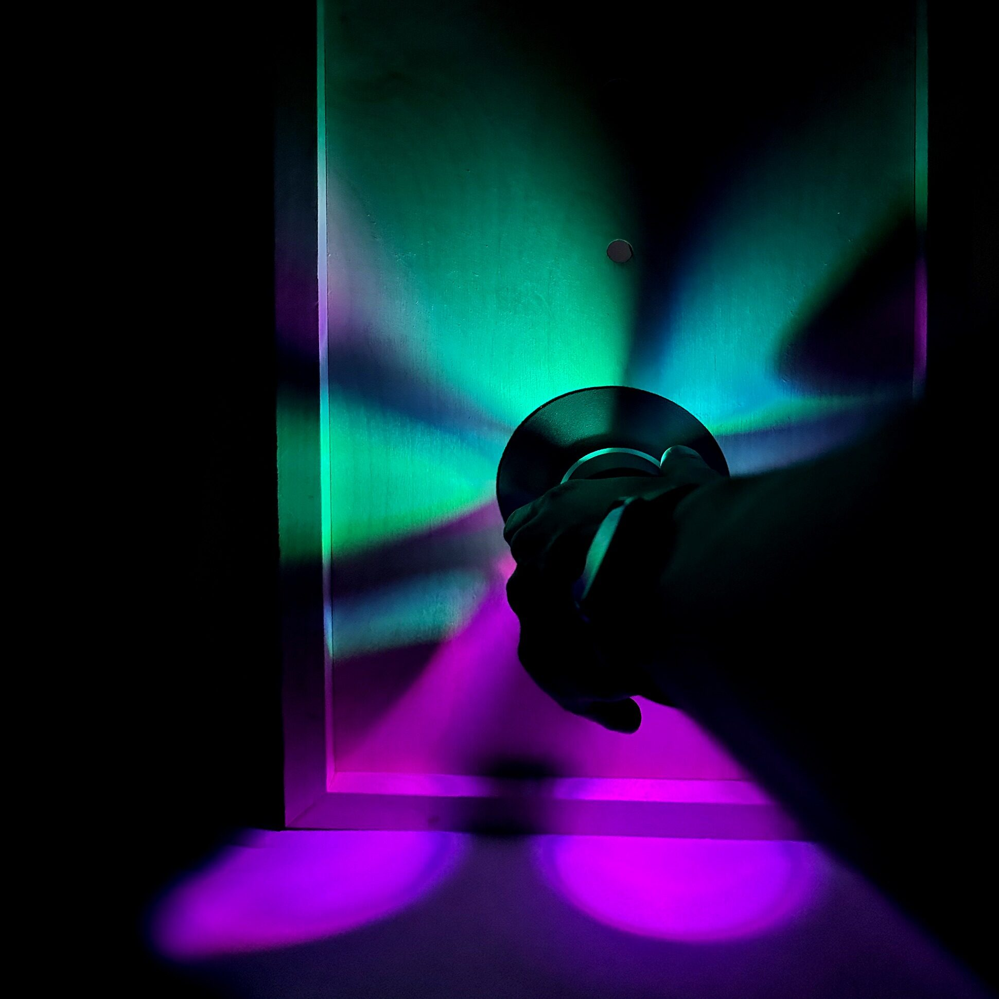
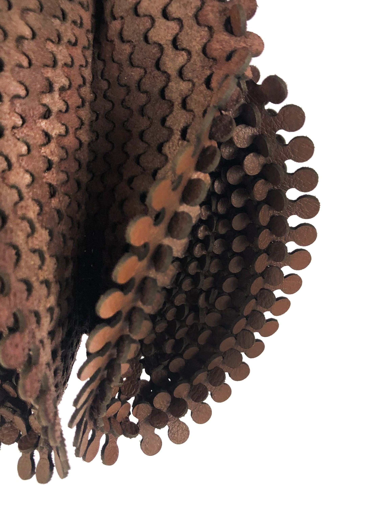

Janus
What if doorways decided who walks through them?
Interaction Intelligence Studio + Intelligent Multimodal User Interfaces Course

Bruce & Wendy
How does one design a re-assembleable meta-material?
Geometric Disciplines and Architectural Skills

See x Saw
How can a single controller and a single line become a game for two?
Interaction Intelligence Studio

Hostile Caesar Salad
How can gastronomic plating become interactive?
Creative Computation Course

Stratum
How could material experimentation be used for a unique installation?
Grow Op 2018